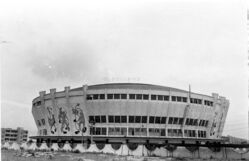
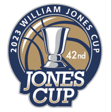
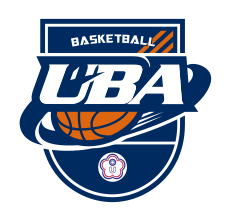

1949 七虎隊
七虎隊成立，成為戰後率先成立的台灣籃球隊伍
1953 三軍球場
三軍球場興建，比賽幾乎場場爆滿，為台灣籃球黃金時期
1963-1988 中華體育館

成為再次掀起台灣籃球熱的聖地，1988年因意外被燒掉，此後因為無替代球場，台灣各大小比賽喊停，影響重大
1977 威廉瓊斯盃

首屆威廉瓊斯盃國際邀請賽開打至今，成為台灣籃壇與國際交流的窗口
1987 UBA

大專籃球聯賽UBA開打，是成為職業籃球聯賽之前最重要的搖籃
1988 HBL
高中籃球聯賽HBL開打，已成為青春熱血的代名詞! 2015年時，HBL四強決賽在台北小巨蛋舉辦，每日湧入萬人，創學生籃球聯賽紀錄
2003 SBL
超級籃球聯賽SBL開打，2006年時，SBL一票難求，盛況前所未見
2020 P.LEAGUE+
P. LEAGUE+成立，由黑人陳建州擔任執行長，首四場比賽吸引2萬多人入場，線上收看更突破百萬人次
2021 T1 League
為台灣歷史上第三個開打的職籃聯盟，由新北中信特攻、高雄全家海神、台北戰神等隊伍組成